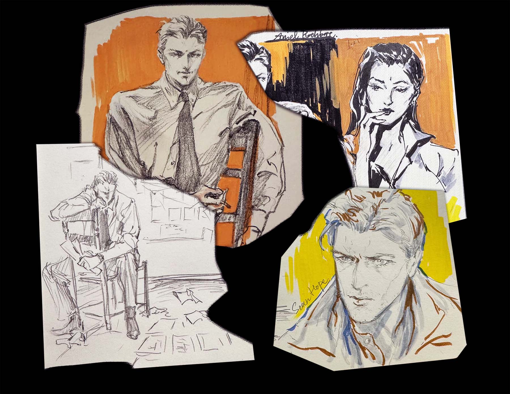

ARCHIVE RECORD · CLASSIFIED
Symon-Yagami Shigefusa
八神重英


FILE ID: 07-YS
男 10.25.1954 生于美国佛蒙特州，是家中的次子。长姐 八神伊织（Yagami Iori） 是一位犯罪肖像与侧写专家。
八神重英从佛蒙特大学的法学院毕业。曾于纽约的警局任职。如今回到佛蒙特警局，与肖恩 霍普（Sean Hope）组成职业搭档。
据悉他经手的多起案件涉及异常，甚至超自然现象。其调查方式与常规执法存在差异。
相关人员：
菅原真（Sugahara Shin），神秘学的教授，任职于佛蒙特大学。同八神在大学时相识，目前八神居住在他的祖宅别墅内。
备注：主体个体存在未归档异常特征，需持续观察。
男 10.25.1954 生于美国佛蒙特州，是家中的次子。长姐 八神伊织（Yagami Iori） 是一位犯罪肖像与侧写专家。
八神重英从佛蒙特大学的法学院毕业。曾于纽约的警局任职。如今回到佛蒙特警局，与肖恩 霍普（Sean Hope）组成职业搭档。
据悉他经手的多起案件涉及异常，甚至超自然现象。其调查方式与常规执法存在差异。
相关人员：
菅原真（Sugahara Shin），神秘学的教授，任职于佛蒙特大学。同八神在大学时相识，目前八神居住在他的祖宅别墅内。
备注：主体个体存在未归档异常特征，需持续观察。
ATTACHMENT / VISUAL RECORD
